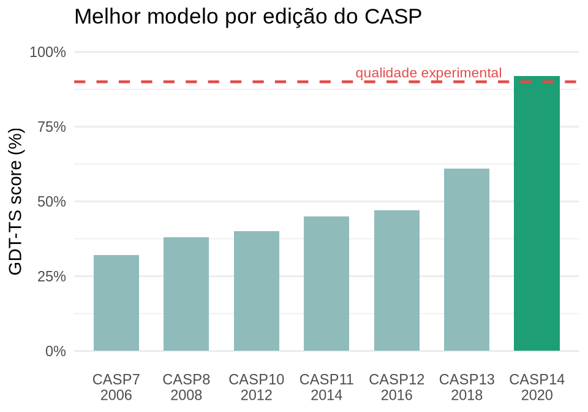
Introdução à Bioinformática: dados, algoritmos e aprendizado de máquina em biologia
Matheus Pimenta ![]()
Escola Superior de Agricultura “Luiz de Queiroz”, Universidade de São Paulo
2026-05-22
Bioinformática - Conceitos Básicos
A biologia gerou mais dados do que
humanos conseguem analisar.
O que fazemos com isso?
Por que a bioinformática existe?
O problema central:
- Técnicas experimentais modernas produzem dados em escala industrial
- Um único experimento de RNA-seq gera gigabytes de dados brutos
- Análise manual é fisicamente impossível
- Ferramentas computacionais deixaram de ser complemento e passaram a ser condição para fazer biologia moderna
“Biology is becoming an information science.”
A queda do custo de sequenciamento
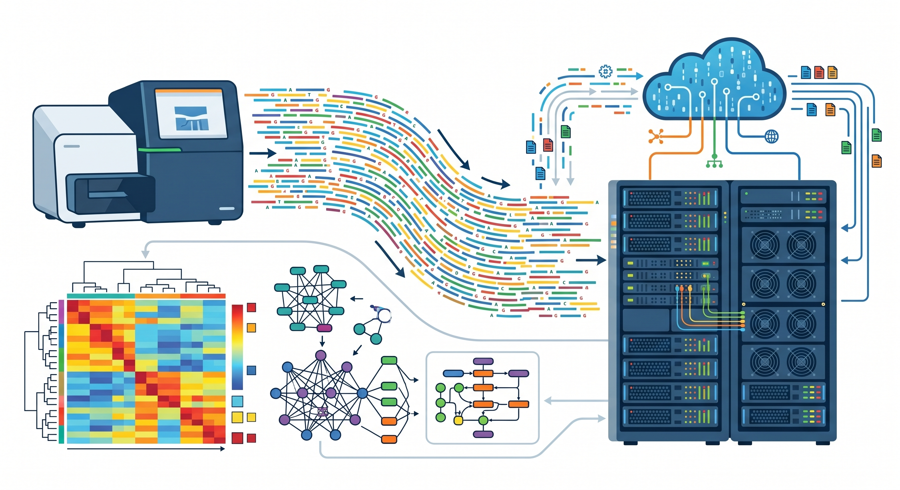
A queda do custo de sequenciamento
Projeto Genoma Humano (1990–2003):
- Duração: 13 anos
- Custo: ~US$ 3 bilhões
- Consórcio internacional de 20 países (Lander et al. 2001)
Hoje (2024):
- Duração: < 24 horas
- Custo: ~US$ 100–200 por genoma completo
- Equipamento cabe em uma bancada de laboratório
Lei de Moore vs. sequenciamento
O custo de sequenciamento caiu mais rápido do que a Lei de Moore a partir de 2008, quando o sequenciamento de segunda geração (NGS) foi introduzido.
Fonte: NHGRI (2023)

A queda do custo de sequenciamento
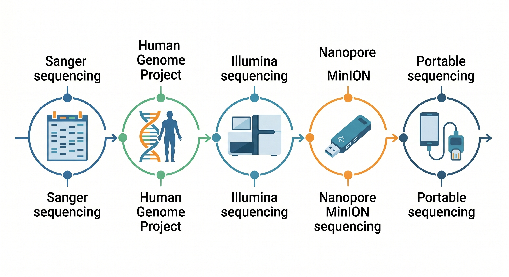
O que é bioinformática?
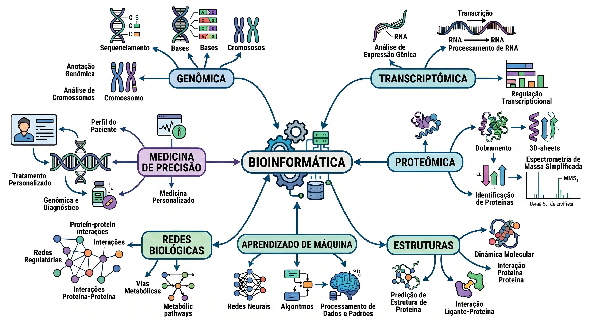
O que é bioinformática?
Definição operacional:
Bioinformática é o desenvolvimento e aplicação de métodos computacionais, matemáticos e estatísticos para adquirir, armazenar, organizar, analisar e interpretar dados biológicos.
— adaptado de (Luscombe, Greenbaum, and Gerstein 2001)
Três pilares:
Biologia
△
/ \
/ \
/ BI \
/ \
▽─────────▽
Computação EstatísticaPor que biólogos precisam entender os métodos?
Ferramentas são caixas-pretas — saber usar o BLAST não é o mesmo que entender o que o E-value significa
Parâmetros importam — um k-mer de tamanho errado ou um threshold inadequado muda completamente o resultado biológico
Interpretação depende do método — alinhamento global vs. local produzem conclusões diferentes sobre o mesmo par de sequências
Colaboração efetiva — biólogos que entendem os limites dos métodos fazem perguntas melhores aos bioinformatas
Reprodutibilidade — a crise de reprodutibilidade em biologia molecular tem componente computacional significativo (Baker 2016)
Representação de dados biológicos
Como traduzimos a biologia para o computador?
A abstração fundamental
Biologia → Estrutura de dados
| Objeto biológico | Representação |
|---|---|
| DNA / RNA | String sobre \(\{A, T, C, G\}\) |
| Proteína | String sobre 20 símbolos |
| Estrutura 3D | Coordenadas atômicas \((x, y, z)\) |
| Interações moleculares | Grafo \(G = (V, E)\) |
| Expressão gênica | Matriz \(n \times m\) |
Por que isso importa?
Cada escolha de representação define quais perguntas podemos fazer e quais algoritmos podemos usar.
Uma sequência como string permite busca de padrões. Como vetor de frequências, permite distâncias. Como grafo de k-mers, permite montagem.
Formatos de arquivo: sequências
FASTA — o formato mais básico
>NM_007294.4 BRCA1, Homo sapiens
ATGGATTTATCTGCTCTTCGCGTTGAAGAAG
TACAAAATGTCATTAATGCTATGCAGAAAATC- Cabeçalho: linha iniciada com
> - Sequência: uma ou mais linhas
- Aceita DNA, RNA e proteínas
- Sem informação de qualidade
FASTQ — sequenciamento de nova geração
@SRR001666.1 HWI-EAS27:3:1:0:1020/1
GTTGCTTCTGGCGTGGGTGGGGGGG
+
IIIIIIIIIIIIIIIIIIIIIIIIH@+ identificador do read- Sequência bruta
+separador- Qualidade Phred por base: \(Q = -10 \log_{10}(P_e)\)
Formatos de arquivo: além das sequências
GFF3 / GTF — anotação genômica
chr1 Ensembl gene 11869 14409 . +
. ID=ENSG00000223972- Define onde estão genes, éxons, UTRs
- Sempre associado a um genoma de referência
Formatos de redes biológicas
# SIF (Simple Interaction Format)
TP53 pp MDM2
TP53 pp CDKN1A
BRCA1 pp TP53
# GraphML / edge list (STRING DB)
source target score
9606.ENSP00000269305
9606.ENSP00000379512 0.999Padrão de fato
Quase toda análise em bioinformática começa convertendo entre esses formatos. Saber ler e escrever FASTA, FASTQ e GFF é habilidade básica.
Bancos de dados públicos
| Banco | Conteúdo | Referência |
|---|---|---|
| GenBank / NCBI | Sequências nucleotídicas | Benson et al. (2013) |
| UniProt / Swiss-Prot | Proteínas anotadas | UniProt Consortium (2023) |
| PDB | Estruturas 3D | Berman et al. (2000) |
| Ensembl | Genomas anotados | Cunningham et al. (2022) |
| SRA | Dados brutos de NGS | Leinonen et al. (2011) |
| STRING | Redes de interação | Szklarczyk et al. (2023) |
Ciência aberta na prática
Todo resultado publicado hoje exige depósito dos dados em banco público antes da aceitação do artigo.
GenBank dobra de tamanho a cada ~18 meses desde 1982 (Benson et al. 2013). O SRA armazena atualmente mais de 50 petabytes de dados de sequenciamento.
Bancos de dados públicos
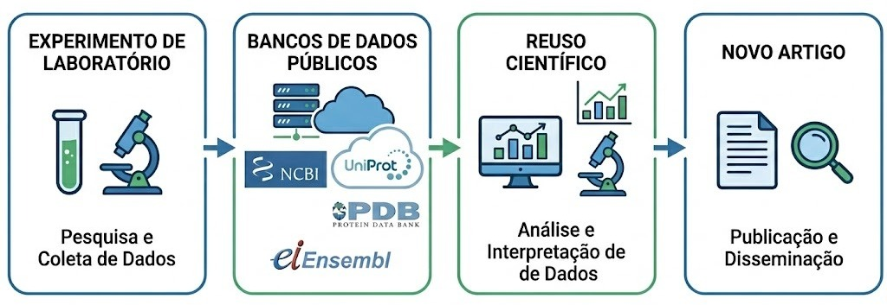
Alinhamento de sequências
A operação fundamental da bioinformática clássica
Por que alinhar sequências?
Princípio central:
Sequências similares compartilham ancestral comum ou função conservada
Humano: MVLSPADKTNVKAAW-GKVGAHAGEYGAEAL
Rato: MVLSGEDKSNIKAAW-GKIGGHGAEYGAEAL
Galinha:MVLSAADKNNVKGIF-TKIAGHAEEYGAETL
**** ** * * * * ** ** **posição 100% conservadasubstituição ou gap
Dois tipos de alinhamento:
| Global | Local | |
|---|---|---|
| Abrangência | Sequência inteira | Região de interesse |
| Método | Needleman–Wunsch | Smith–Waterman |
| Uso típico | Sequências homólogas | Domínios, motivos |
Aplicações práticas
Busca em bancos de dados, inferência filogenética, anotação funcional, detecção de variantes.
Por que alinhar sequências?
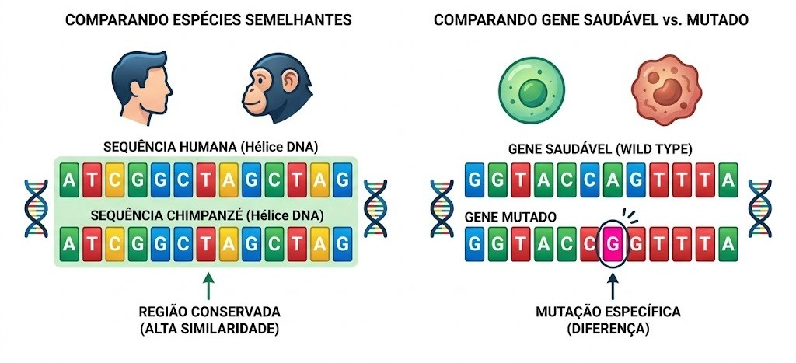
Programação dinâmica — Needleman–Wunsch
A recorrência:
\[F(i,j) = \max \begin{cases} F(i-1,\,j-1) + s(x_i, y_j) \\ F(i-1,\,j) - d \\ F(i,\,j-1) - d \end{cases}\]
- \(s(x_i, y_j)\): score de match/mismatch
- \(d\): penalidade de gap
- Preenchimento: linha por linha
- Traceback: caminho de volta revela o alinhamento
Exemplo (\(+1\) match, \(-1\) mismatch, \(-2\) gap):
A C G T
0 -2 -4 -6 -8
A -2 1 -1 -3 -5
G -4 -1 0 0 -2
T -6 -3 -2 -1 1Alinhamento ótimo:
ACGT
A-GT score = 1Matrizes de substituição e penalidade de gap
Por que não usar +1/–1 simples?
Substituições não são equiprováveis:
BLOSUM62 (Henikoff and Henikoff 1992):
- Derivada de blocos de alinhamentos reais (BLOCKS DB)
- O número indica identidade mínima usada (62%)
- Mais comum para proteínas divergentes
- PAM: modelo evolutivo alternativo
Gap penalty
- Gap open: custo de iniciar um gap
- Gap extend: custo de estender um gap existente
:::
BLAST — escala para bilhões de sequências
O problema de escala:
- GenBank: > 4 × 10¹² bases (2024)
- NW contra o GenBank: inviável
- BLAST (Altschul et al. 1990): heurística em três etapas
- Seeding — encontra words (k-mers) de alto score na query
- Extension — estende o alinhamento sem gaps (HSP)
- Evaluation — calcula E-value e filtra resultados
E-value: a estatística do BLAST
\[E = m \cdot n \cdot e^{-\lambda S}\]
- \(m\), \(n\): tamanhos da query e do banco
- \(S\): bit-score do alinhamento
- \(\lambda\): parâmetro normalizador
Interpretando o E-value
\(E = 10^{-5}\): espera-se 0,00001 hit ao acaso num banco deste tamanho.
Não é p-value. Quanto menor, mais significativo.
BLAST — escala para bilhões de sequências
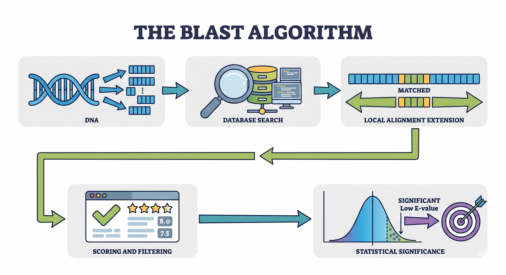
Alinhamento múltiplo e aplicações
MSA — Multiple Sequence Alignment
- Estende o problema para \(N\) sequências simultâneas
- Ótimo exato: \(O(2^N \cdot L^N)\)
- Heurísticas progressivas:
- MUSCLE (Edgar 2004)
- MAFFT (Katoh and Standley 2013)
Princípio: alinhar primeiro os pares mais similares, depois incorporar os demais (guide tree)
Aplicações do alinhamento
MSA
├── Inferência filogenética
│ └── (IQ-TREE, RAxML)
├── Detecção de conservação
│ └── (pressão seletiva por sítio)
├── Anotação funcional
│ └── (sítios ativos conservados)
└── Profile HMMs
└── (HMMER)Limitação fundamental
Alinhamento assume que posições homólogas estão na mesma coluna. Rearranjos, duplicações e recombinações violam essa premissa.
Métodos livres de alinhamento
Escalando para genomas, metagenomas e além
O problema de escala
Onde o alinhamento falha:
- Metagenômica: classificar \(10^7\) reads contra \(10^5\) genomas de referência
- Montagem de novo: comparar todos os pares de \(10^9\) reads curtos
- Genômica comparativa: distância entre 10.000 genomas bacterianos
Custo do alinhamento par-a-par:
\[T(n, m) = O(n \cdot m)\]
| Método | Complexidade | Escalabilidade |
|---|---|---|
| Smith–Waterman | \(O(n \cdot m)\) | ✗ Genomas |
| BLAST | \(O(n \cdot m \cdot \varepsilon)\) | △ Moderada |
| k-mer / Mash | \(O(n + m)\) | ✓ Metagenômica |
Intuição
Métodos livres de alinhamento trocam precisão de posição por velocidade e escalabilidade a pergunta deixa de ser “onde essas sequências diferem?” e passa a ser “o quão parecidas elas são?”.
k-mers: a unidade fundamental
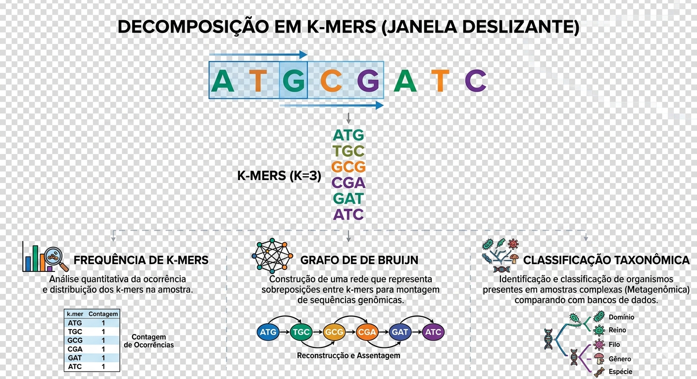
k-mers: a unidade fundamental
Definição:
Dado uma sequência \(S\) de comprimento \(L\) e um inteiro \(k\), os k-mers são todas as subsequências contíguas de comprimento \(k\):
\[\text{k-mers}(S) = \{S[i \,{:}\, i+k] \mid 0 \leq i \leq L - k\}\]
Exemplo (\(k = 3\)):
S = G A T T A C A
├──┤ GAT
├──┤ ATT
├──┤ TTA
├──┤ TAC
├──┤ ACATotal: \(L - k + 1 = 7 - 3 + 1 = 5\) k-mers
k-mers: a unidade fundamental
Vetor de frequências como assinatura:
Para \(k = 2\), DNA: \(4^2 = 16\) possíveis 2-mers
AA AC AG AT CA CG CT ...
Genoma A [0 3 1 2 0 4 1 ...]
Genoma B [0 3 1 1 0 4 2 ...]
Genoma C [2 0 3 0 1 0 3 ...]- A e B têm perfis similares → provavelmente relacionados
- C tem perfil distinto → organismo diferente
Escolha de \(k\):
- \(k\) pequeno: rápido, mas inespecífico (\(4^4 = 256\) possíveis)
- \(k\) grande: específico, mas memória cresce (\(4^{21} \approx 4 \times 10^{12}\))
- Prática: \(k = 21\)–\(31\) para classificação taxonômica
Aplicações: Kraken2, Jellyfish e MinHash
Kraken2 — classificação taxonômica (Wood, Lu, and Langmead 2019)
- Mapeia cada k-mer de um read ao nó mais específico da árvore taxonômica que contém esse k-mer
- Banco de dados: k-mers de todos os genomas de referência (NCBI RefSeq)
- Velocidade: \(> 10^6\) reads/segundo em laptop comum
Jellyfish — contagem de k-mers (Marçais and Kingsford 2011)
- Contagem paralela e eficiente de k-mers em FASTQ
- Histograma de frequências → estimativa do tamanho do genoma
\[G \approx \frac{N - E}{M}\]
onde \(N\) = total de k-mers, \(E\) = k-mers com erro, \(M\) = cobertura média
:::
Aplicações: Kraken2, Jellyfish e MinHash
MinHash / Mash — comparação em escala (Ondov et al. 2016)
- Extraia todos os k-mers de dois genomas
- Aplique uma função hash a cada k-mer
- Retenha apenas os \(s\) menores hashes (sketch)
- Estime a similaridade de Jaccard:
- Converta para distância evolutiva:
Resultado prático
Comparar 10.000 genomas bacterianos par-a-par com Mash leva minutos, com BLAST, levaria meses.
Distâncias baseadas em compressão
Complexidade de Kolmogorov (Li and Vitányi 2004)
A complexidade \(K(x)\) de uma string \(x\) é o comprimento do menor programa que a gera
Intuição central:
Sequências similares contêm informação redundante entre si, comprimem melhor juntas do que separadas.
NCD — Normalized Compression Distance (Cilibrasi and Vitányi 2005)
Vantagem
Não requer alinhamento nem banco de referência. Funciona para qualquer tipo de sequência DNA, proteínas, linguagem natural, música.
Escalabilidade: alinhamento vs. k-mer
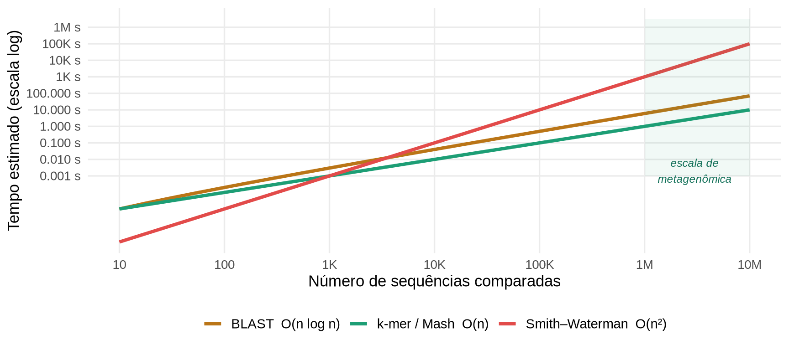
Modelos probabilísticos: HMMs
Quando a biologia tem estados que não podemos observar diretamente
Modelos probabilísticos: HMMs
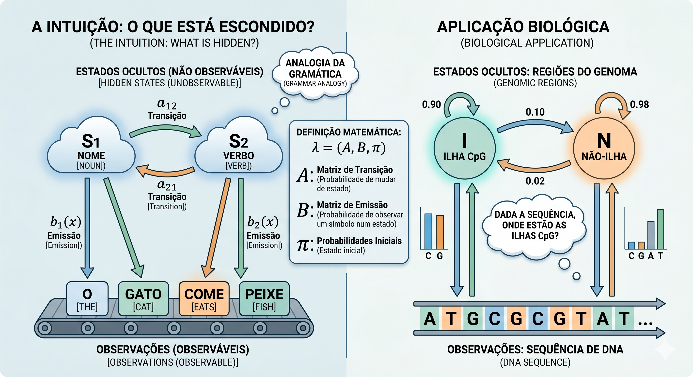
A intuição: o que está escondido?
O problema central em biologia:
Observamos nucleotídeos. O que não observamos:
- Se estamos numa ilha CpG ou num região comum
- Se um trecho é éxon, íntron ou região intergênica
- Se uma posição numa proteína pertence a um domínio funcional
Estrutura geral:
Estados ocultos:
┌───┐ a₁₁ ┌───┐
│ S₁│ ←───→ │ S₂│
└─┬─┘ └─┬─┘
│ b₁(x) │ b₂(x)
↓ ↓
Observações:
A T C G ... A T C G ...Analogia da gramática
Um HMM é uma gramática probabilística: estados são categorias gramaticais, transições são regras sintáticas, emissões são as palavras. A sequência de DNA é o texto, a estrutura subjacente é o que queremos descobrir.
A intuição: o que está escondido?
Um HMM é definido por três componentes:
\[\lambda = (A,\; B,\; \pi)\]
- \(A\): matriz de transição entre estados ocultos
- \(B\): matriz de emissão (símbolo observado dado o estado)
- \(\pi\): distribuição de estados iniciais
Estrutura geral:
Estados ocultos:
┌───┐ a₁₁ ┌───┐
│ S₁│ ←───→ │ S₂│
└─┬─┘ └─┬─┘
│ b₁(x) │ b₂(x)
↓ ↓
Observações:
A T C G ... A T C G ...Analogia da gramática
Um HMM é uma gramática probabilística: estados são categorias gramaticais, transições são regras sintáticas, emissões são as palavras. A sequência de DNA é o texto, a estrutura subjacente é o que queremos descobrir.
Exemplo: ilhas CpG
Dois estados ocultos:
- I (island): região com CpG não metilado, GC-rica
- N (non-island): resto do genoma, CpG suprimido por metilação
Probabilidades de emissão \(B\):
| Base | P(base | I) | P(base | N) |
|---|---|---|
| A | 0.25 | 0.30 |
| C | 0.25 | 0.20 |
| G | 0.25 | 0.20 |
| T | 0.25 | 0.30 |
(versão simplificada — modelos reais usam dinucleotídeos)
Probabilidades de transição \(A\):
→ I → N
De I 0.90 0.10
De N 0.02 0.98Interpretação biológica:
- De I → I (0.90): ilhas são regiões contíguas longas
- De N → N (0.98): a maior parte do genoma é não-ilha
- De N → I (0.02): transições são raras, fronteiras bem definidas
Exemplo: ilhas CpG
Dois estados ocultos:
- I (island): região com CpG não metilado, GC-rica
- N (non-island): resto do genoma, CpG suprimido por metilação
Probabilidades de emissão \(B\):
| Base | P(base | I) | P(base | N) |
|---|---|---|
| A | 0.25 | 0.30 |
| C | 0.25 | 0.20 |
| G | 0.25 | 0.20 |
| T | 0.25 | 0.30 |
(versão simplificada — modelos reais usam dinucleotídeos)
Probabilidades de transição \(A\):
→ I → N
De I 0.90 0.10
De N 0.02 0.98A pergunta do HMM
Dada a sequência observada ACGCGCGTATAT..., qual a sequência mais provável de estados I/N que a gerou?
Os três problemas do HMM
1. Avaliação
“Qual a probabilidade desta sequência dado o modelo?”
Algoritmo Forward
Soma sobre todos os caminhos possíveis de estados que poderiam ter gerado a sequência.
Útil para: comparar qual modelo (organismo) melhor explica um read.
2. Decodificação
“Qual a sequência de estados mais provável?”
Algoritmo de Viterbi
Programação dinâmica: encontra o caminho de estados com maior probabilidade conjunta.
Útil para: anotar regiões — éxon, íntron, CpG, domínio.
3. Treinamento
“Quais parâmetros melhor explicam os dados?”
Baum–Welch (EM)
EM: itera entre estimar os estados ocultos e re-estimar os parâmetros.
Útil para: aprender um modelo a partir de sequências sem anotação.
Os três problemas do HMM
1. Avaliação
“Qual a probabilidade desta sequência dado o modelo?”
Algoritmo Forward
2. Decodificação
“Qual a sequência de estados mais provável?”
Algoritmo de Viterbi
3. Treinamento
“Quais parâmetros melhor explicam os dados?”
Baum–Welch (EM)
Viterbi na prática
É análogo à programação dinâmica do alinhamento, preenche uma matriz de scores, mas agora as linhas são estados e as colunas são posições na sequência.
Profile HMMs e HMMER
Da MSA ao Profile HMM (Eddy 2011):
MSA de 3 sequências:
seq1 ACDEFGHIKLM
seq2 ACD--GHIKLM
seq3 ACDEFGHIK-M
↓ ↓ ↓ ↓ ↓
M D M I M ← tipo de estadoCada coluna da MSA vira um estado de match (M):
- Probabilidades de emissão = frequência de aminoácidos na coluna
- Colunas com muitos gaps → estado de deleção (D)
- Inserções entre colunas → estado de inserção (I)
Estrutura do Profile HMM:
M₁ → M₂ → M₃ → ... → Mₙ
↗↑↘ ↗↑↘ ↗↑↘ ↗↑↘
I₀ D₁ I₁ D₂ I₂ ... DₙHMMER — busca de homólogos distantes:
- Muito mais sensível que BLAST para proteínas divergentes
- Pfam: banco de > 19.000 famílias de domínios como Profile HMMs (Mistry et al. 2021)
Aplicações dos HMMs em biologia
Predição de genes (Stanke et al. 2008)
Genoma:
──────[éxon]──[íntron]──[éxon]──
↑ ↑
estado M estado M
(alta prob. (alta prob.
de códon) de códon)
Ferramentas: GENSCAN, Augustus, GlimmerHMMDetecção de ilhas CpG
- Identificação de promotores e regiões regulatórias
- Relevante para epigenômica e estudo de expressão gênica
Anotação de domínios funcionais
- Pfam + HMMER: ~80% das proteínas humanas têm ao menos um domínio anotado
- InterPro integra múltiplos bancos de Profile HMMs
Aplicações dos HMMs em biologia
Predição de genes (Stanke et al. 2008)
Genoma:
──────[éxon]──[íntron]──[éxon]──
↑ ↑
estado M estado M
(alta prob. (alta prob.
de códon) de códon)
Ferramentas: GENSCAN, Augustus, GlimmerHMMDetecção de ilhas CpG
- Identificação de promotores e regiões regulatórias
- Relevante para epigenômica e estudo de expressão gênica
Estrutura de RNA
- Covariance Models (CMs): extensão dos HMMs para capturar pares de bases
- Rfam: banco de famílias de RNA não-codificante (Kalvari et al. 2021)
HMMs como fundação
Redes neurais recorrentes (RNNs) e Transformers podem ser entendidos como generalizações não-lineares dos HMMs, com capacidade de capturar dependências de longo alcance que HMMs clássicos não conseguem.
Grafos e redes complexas
Quando a biologia é naturalmente um problema de rede
Grafos de De Bruijn: montagem de genomas
O problema da montagem:
Sequenciamento produz milhões de reads curtos precisamos reconstruir o genoma original sem tê-lo como referência.
Grafo de De Bruijn (Zerbino and Birney 2008):
- Nós: \((k-1)\)-mers únicos
- Arestas: \(k\)-mers que conectam dois \((k-1)\)-mers sobrepostos
Exemplo (\(k = 3\), reads: ATCG, TCGA, CGAT):
ATC TCG CGA GAT
AT ──→ TC ──→ CG ──→ GA ──→ AT
↑ │
└──────────────────────────────┘Caminho Euleriano → sequência montada: ATCGAT
Por que grafos funcionam aqui?
Cada read define um caminho no grafo. A montagem é encontrar o caminho que percorre cada aresta exatamente uma vez, o caminho Euleriano.
Grafos de De Bruijn: montagem de genomas
O problema da montagem:
Sequenciamento produz milhões de reads curtos precisamos reconstruir o genoma original sem tê-lo como referência.
Grafo de De Bruijn (Zerbino and Birney 2008):
- Nós: \((k-1)\)-mers únicos
- Arestas: \(k\)-mers que conectam dois \((k-1)\)-mers sobrepostos
Complicações reais
- Erros de sequenciamento → arestas espúrias
- Regiões repetitivas → bifurcações no grafo
- Cobertura não uniforme → nós com poucos reads
SPAdes (Bankevich et al. 2012) e Velvet (Zerbino and Birney 2008) resolvem isso com múltiplos valores de \(k\) e simplificação iterativa do grafo.
Redes biológicas: tipos e exemplos
| Rede | Nós | Arestas | Banco |
|---|---|---|---|
| PPI | Proteínas | Interação física | STRING, BioGRID |
| Metabólica | Metabolitos | Reações | KEGG, BiGG |
| Co-expressão | Genes | Correlação de expressão | WGCNA |
| Regulatória | TFs, genes | Regulação transcricional | JASPAR, RegulonDB |
| Genômica | Genes | Co-ocorrência / sintenia | OrthoFinder |
Representação formal:
\[G = (V,\, E,\, w) \quad \text{ou} \quad G = (V,\, E)\]
- Dirigido vs. não-dirigido
- Ponderado vs. binário
- Uni- vs. bipartido
PPI na prática
A rede PPI humana (interactoma) tem:
- ~20.000 proteínas como nós
- ~300.000–600.000 interações estimadas
- Apenas ~10% documentadas experimentalmente
Co-expressão ≠ interação física
WGCNA (Langfelder and Horvath 2008) agrupa genes com perfis de expressão similares entre condições, não implica contato direto entre as proteínas. Módulos de co-expressão são hipóteses funcionais, não interações confirmadas.
Propriedades emergentes das redes biológicas
Distribuição de grau livre de escala (Barabási and Albert 1999):
\[P(k) \sim k^{-\gamma}, \quad \gamma \approx 2\text{–}3\]
- Maioria dos nós tem poucos vizinhos
- Poucos nós (hubs) têm centenas de conexões
- Resultado de crescimento preferencial: novos nós conectam-se preferencialmente a nós já bem conectados
Hubs biológicos:
Proteínas hub (alto grau) tendem a ser essenciais, sua remoção leva à morte celular (Jeong et al. 2001)
Propriedades emergentes das redes biológicas
Mundo pequeno (Watts and Strogatz 1998):
Apesar do tamanho, redes biológicas têm:
- Caminho médio curto \(\langle d \rangle \sim \log N\)
- Alto coeficiente de agrupamento \(C \gg C_{\text{aleatória}}\)
Implicação funcional
Alto agrupamento → módulos funcionais coesos. Caminho curto → propagação rápida de sinais através da célula.
Análise de redes: métricas e aplicações
Medidas de centralidade:
| Medida | Definição | Interpreta |
|---|---|---|
| Grau \(k_i\) | Número de vizinhos | Conectividade local |
| Betweenness \(b_i\) | Fração de caminhos mínimos que passam por \(i\) | Ponte / gargalo |
| Eigenvector \(e_i\) | Influência ponderada pelos vizinhos | Hub de hubs |
| Closeness \(c_i\) | Inverso da distância média aos demais | Acesso global |
Detecção de comunidades (módulos):
- Louvain, Leiden, Girvan–Newman
- Otimização da modularidade \(Q\):
\[Q = \frac{1}{2m}\sum_{ij}\left[A_{ij} - \frac{k_i k_j}{2m}\right]\delta(c_i, c_j)\]
Robustez e vulnerabilidade:
Ataque a hubs:
Remover os 5% mais conectados
→ rede fragmenta rapidamente
Falha aleatória:
Remover 5% de nós aleatórios
→ rede permanece conectada
Redes livre de escala são:
✓ Robustas a falhas aleatórias
✗ Frágeis a ataques direcionadosAplicação clínica
Módulos funcionais = grupos de genes/proteínas atuando juntos em uma via. Perturbação de um módulo → fenótipo de doença. Alvo de drogas bem-sucedido muitas vezes é um hub de módulo doença-específico.
Exemplo: SARS-CoV-2 e o interactoma humano
Gordon et al. (2020) (Gordon et al. 2020):
- Expressaram as 26 proteínas do SARS-CoV-2 em células humanas
- Identificaram 332 proteínas humanas interagentes por AP-MS
- Mapearam essas proteínas no interactoma humano (STRING)
Resultado da análise de rede:
- Proteínas virais formam um módulo coeso na rede humana
- Concentradas em: transporte de vesículas, tradução, mitocôndria, resposta ao DNA
- 69 drogas aprovadas ou em ensaio clínico atingem proteínas do módulo
Estratégia bioinformática:
26 proteínas virais
↓ AP-MS
332 alvos humanos
↓ mapeamento
Interactoma humano
↓ análise de rede
Módulos funcionais
↓ enrichment
Vias perturbadas
↓ drug repurposing
69 candidatos a drogaDrug repurposing via redes
Redes de interação vírus–hospedeiro são hoje o ponto de partida padrão para reaproveitamento de drogas em doenças infecciosas emergentes.
Machine Learning e Deep Learning
Quando os dados ensinam o modelo e o modelo surpreende a biologia
ML clássico em bioinformática
O pipeline padrão:
Dados biológicos
↓ engenharia de features
Matriz X (amostras × features)
↓ treinamento
Modelo aprendido
↓ validação cruzada
Predição / ClassificaçãoFeatures típicas em bioinformática:
- Frequências de k-mers e AAs
- Perfis de conservação (Profile HMMs)
- Contagens de expressão gênica (RNA-seq)
- Propriedades estruturais e físico-químicas
ML clássico em bioinformática
Algoritmos mais usados:
| Método | Aplicação típica |
|---|---|
| Random Forest | Predição de genes essenciais, classificação de variantes |
| SVM | Detecção de sítios de splicing, predição de enhancers |
| Regressão logística | Associação genótipo-fenótipo (GWAS) |
| k-means / hierárquico | Clustering de amostras em RNA-seq |
| PCA / UMAP | Redução de dimensionalidade, visualização de ômicos |
Validação é crítica
Em bioinformática, data leakage é frequente: usar sequências do mesmo organismo em treino e teste superestima o desempenho.
Redes neurais para sequências biológicas
CNNs — motifs locais:
Sequência: A T C G G A T C A G
─────────────────────
Filter 1: ████ → detecta ATCG
Filter 2: ████ → detecta CGGA
Filter 3: ████ → detecta ATCA- Filtros aprendem motifs de sequência automaticamente
- Análogos a matrizes de posição-peso (PWMs), mas aprendidas
- Aplicação: DeepBind (Alipanahi et al. 2015) — predição de sítios de ligação de TFs
RNNs / LSTMs — contexto longo:
- Leem a sequência posição por posição mantendo memória
- Capturam dependências de longo alcance (e.g., pares de bases em RNA)
- Limitação: paralelização difícil, sequências muito longas ainda são desafio
Redes neurais para sequências biológicas
Modelos de linguagem para biologia:
| Modelo | Domínio | Referência |
|---|---|---|
| DNABERT | DNA | Ji et al. (2021) |
| ESM-2 / ESMFold | Proteínas | Lin et al. (2023) |
| ProtTrans | Proteínas | Elnaggar et al. (2022) |
| Nucleotide Transformer | Genômica | Dalla-Torre et al. (2023) |
Transformers — atenção global:
\[\text{Attention}(Q, K, V) = \text{softmax}\!\left(\frac{QK^T}{\sqrt{d_k}}\right)V\]
- Cada posição “atende” a todas as outras simultaneamente
- Captura dependências de qualquer distância
- Paralelizável: escala para sequências longas
AlphaFold2: o problema que durou 50 anos
O problema do dobramento:
Dada a sequência de aminoácidos, qual é a estrutura 3D da proteína?
- Proposto por Anfinsen (1972, Nobel): estrutura é determinada pela sequência
- CASP (Critical Assessment of Structure Prediction): competição bienal desde 1994
- CASP14 (2020): AlphaFold2 atingiu TM-score > 0.92 na maioria dos alvos, equivalente a qualidade experimental (Jumper et al. 2021)
O salto do CASP14:
AlphaFold2: arquitetura em três atos
1. Entrada:
Sequência alvo
↓ busca em UniRef / BFD
MSA de sequências homólogas
+
Templates estruturais (PDB)2. Evoformer (48 blocos):
- Processa MSA e par de resíduos simultaneamente
- Atenção cruzada: informação da MSA informa os pares, e vice-versa
- Co-evolução → restrições de distância entre resíduos
3. Structure Module (8 blocos):
- Cada resíduo é uma moldura rígida no espaço 3D
- Atualização iterativa de posição e orientação
- Predição de pLDDT por resíduo (confiança local)
AlphaFold2: arquitetura em três atos
pLDDT — confiança por resíduo:
\[\text{pLDDT} \in [0, 100]\]
> 90 Muito alta (azul escuro)
> 70 Confiante (azul claro)
> 50 Baixa (amarelo)
< 50 Muito baixa (laranja)Limitações importantes
- Regiões intrinsecamente desordenadas: pLDDT baixo, estrutura não confiável
- Complexos multi-proteicos: AlphaFold-Multimer é menos preciso
- Dinâmica conformacional: prediz apenas uma conformação
- Proteínas de membrana: sub-representadas no treinamento (PDB)
Além do AlphaFold: biologia com LLMs
Modelos de linguagem para proteínas:
- ESM-2 / ESMFold (Lin et al. 2023): folding direto da sequência sem MSA, muito mais rápido que AlphaFold2
- ProteinMPNN: dado uma estrutura, projeta sequências que a adotam (design inverso)
- RFdiffusion (Watson et al. 2023): gera estruturas de proteínas do zero com difusão
Impacto no agronegócio e biotecnologia:
- Design de enzimas industriais (biocombustível, detergentes)
- Antígenos para vacinas de nova geração
- Pesticidas biológicos específicos por alvo
- Rastreamento de patógenos em microbioma agrícola
Perspectivas e encerramento
Onde vocês se encaixam nesse cenário
Ferramentas open-source para começar hoje
Ecossistemas principais:
| Linguagem | Pacote | Para quê |
|---|---|---|
| R | Bioconductor | RNA-seq, ChIP-seq, microarray |
| R | DESeq2 / edgeR | Expressão diferencial |
| R | WGCNA | Redes de co-expressão |
| Python | Biopython (Cock et al. 2009) | Manipulação de sequências |
| Python | Scanpy | Single-cell RNA-seq |
| Python | NetworkX | Análise de redes |
Plataformas visuais (sem linha de comando):
- Galaxy — pipeline web para NGS, metagenômica, proteômica
- Cytoscape — visualização e análise de redes biológicas
- UGENE — suite integrada para análise de sequências
Ferramentas open-source para começar hoje
Fluxos de trabalho reprodutíveis:
nf-core
Repositório de pipelines Nextflow validados e curados para análises padrão em bioinformática como RNA-seq, metagenômica, ChIP-seq, amplicon, variantes. Gratuito e amplamente usado em produção.
Bioinformática no Brasil
Grupos e instituições de referência:
- ESALQ/USP — genômica de plantas, fitopatologia, metagenômica de solo
- IQ-USP / LaBiECC — bioinformática estrutural e comparativa
- LNCC (RJ) — laboratório nacional, HPC para bioinformática
- Fiocruz — genômica de parasitos, vigilância epidemiológica
- UNICAMP / IAG — bioinformática evolutiva e de populações
- EMBRAPA — genomica aplicada ao melhoramento vegetal e animal
Redes e iniciativas:
- Rede Genômica FAPESP — projetos de sequenciamento de organismos tropicais
- BioInformatics Training Network (ELIXIR-BR) — formação em bioinformática
- Plataforma de Genômica da FIOCRUZ — sequenciamento de patógenos (SARS-CoV-2, Dengue, Mpox)
Por que o Brasil tem vantagem comparativa?
- Maior biodiversidade do planeta: Amazônia, Cerrado, Mata Atlântica, Pantanal — organismos não-modelo, microbiomas únicos, enzimas com propriedades industriais inexploradas
- Agronegócio de escala global: melhoramento de soja, cana, milho, eucalipto, bovinos — todos com programas ativos de genômica
- Doenças tropicais: Dengue, Zika, Chagas, Leishmaniose — pesquisa de ponta com relevância local
Onde estudar e como entrar no campo
Aprendizado autodirigido:
- Rosalind — problemas de bioinformática com verificação automática, do básico ao avançado. Gratuito.
- EMBL-EBI Training — cursos online gratuitos em análise de sequências, expressão, estrutura
- Bioconductor Workflows — tutoriais completos em R com dados reais
Carreiras em bioinformática:
Academia
├── Pesquisa (genômica, proteômica,
│ transcriptômica, metagenômica)
└── Bioinformática de infraestrutura
(pipelines, bancos de dados)
Setor privado
├── Genômica clínica
│ (Mendelics, HMV, Dasa Genômica)
├── Agronegócio
│ (EMBRAPA, Bayer, Syngenta, Corteva)
├── Biotecnologia / Biotech
│ (startups de design de proteínas,
│ terapias gênicas, diagnóstico)
└── Bioinformática industrial
(enzimas, fermentação, microbioma)
Saúde pública
└── Vigilância epidemiológica,
sequenciamento de patógenos (SVS/MS)Recapitulando: o mapa da bioinformática
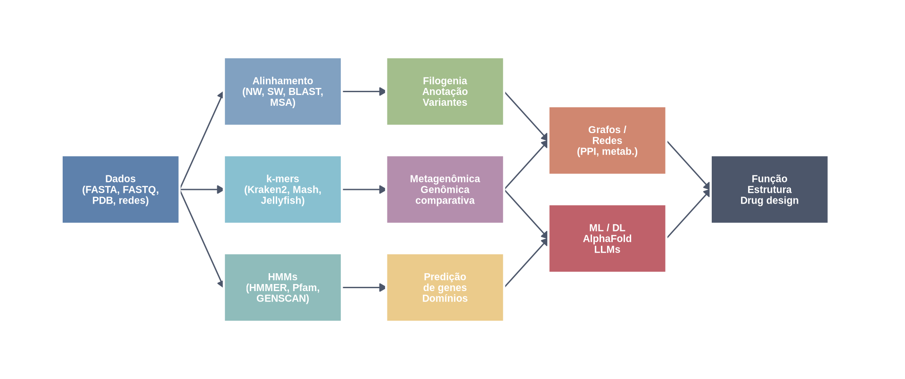
Mensagem final
Vocês já têm o vocabulário biológico.
A bioinformática é a ferramenta para escalar o que vocês já sabem.
Muito obrigado pela atenção!
Leituras Recomendadas
Alipanahi, Babak, Andrew Delong, Matthew T. Weirauch, and Brendan J. Frey. 2015. “Predicting the Sequence Specificities of DNA- and RNA-Binding Proteins by Deep Learning.” Nature Biotechnology 33 (8): 831–38. https://doi.org/10.1038/nbt.3300.
Altschul, Stephen F., Warren Gish, Webb Miller, Eugene W. Myers, and David J. Lipman. 1990. “Basic Local Alignment Search Tool.” Journal of Molecular Biology 215 (3): 403–10. https://doi.org/10.1016/S0022-2836(05)80360-2.
Baker, Monya. 2016. “1,500 Scientists Lift the Lid on Reproducibility.” Nature 533 (7604): 452–54. https://doi.org/10.1038/533452a.
Bankevich, Anton, Sergey Nurk, Dmitry Antipov, Alexey A. Gurevich, Mikhail Dvorkin, Alexander S. Kulikov, Valery M. Lesin, et al. 2012. “SPAdes: A New Genome Assembly Algorithm and Its Applications to Single-Cell Sequencing.” Journal of Computational Biology 19 (5): 455–77. https://doi.org/10.1089/cmb.2012.0021.
Barabási, Albert-László, and Réka Albert. 1999. “Emergence of Scaling in Random Networks.” Science 286 (5439): 509–12. https://doi.org/10.1126/science.286.5439.509.
Benson, Dennis A., Mark Cavanaugh, Karen Clark, Ilene Karsch-Mizrachi, David J. Lipman, James Ostell, and Eric W. Sayers. 2013. “GenBank.” Nucleic Acids Research 41 (D1): D36–42. https://doi.org/10.1093/nar/gks1195.
Berman, Helen M., John Westbrook, Zukang Feng, Gary Gilliland, T. N. Bhat, Helge Weissig, Ilya N. Shindyalov, and Philip E. Bourne. 2000. “The Protein Data Bank.” Nucleic Acids Research 28 (1): 235–42. https://doi.org/10.1093/nar/28.1.235.
Cilibrasi, Rudi, and Paul M. B. Vitányi. 2005. “Clustering by Compression.” IEEE Transactions on Information Theory 51 (4): 1523–45. https://doi.org/10.1109/TIT.2004.838101.
Cock, Peter J. A., Tiago Antao, Jeffrey T. Chang, Brad A. Chapman, Cymon J. Cox, Andrew Dalke, Iddo Friedberg, et al. 2009. “Biopython: Freely Available Python Tools for Computational Molecular Biology and Bioinformatics.” Bioinformatics 25 (11): 1422–23. https://doi.org/10.1093/bioinformatics/btp163.
Cunningham, Fiona, James E. Allen, Jamie Allen, Jorge Alvarez-Jarreta, M. Ridwan Amode, Irina M. Armean, et al. 2022. “Ensembl 2022.” Nucleic Acids Research 50 (D1): D988–95. https://doi.org/10.1093/nar/gkab1049.
Dalla-Torre, Hugo, Liam Gonzalez, Javier Avsec Revilla, Ishan Bhatt, Bhatt Bhatt, Guillaume Croce, Christian Dallago, Gonzalo Benegas, Sami Zouari, et al. 2023. “The Nucleotide Transformer: Building and Evaluating Robust Foundation Models for Human Genomics.” bioRxiv. https://doi.org/10.1101/2023.01.11.523679.
Eddy, Sean R. 2011. “Accelerated Profile HMM Searches.” PLOS Computational Biology 7 (10): e1002195. https://doi.org/10.1371/journal.pcbi.1002195.
Edgar, Robert C. 2004. “MUSCLE: Multiple Sequence Alignment with High Accuracy and High Throughput.” Nucleic Acids Research 32 (5): 1792–97. https://doi.org/10.1093/nar/gkh340.
Elnaggar, Ahmed, Michael Heinzinger, Christian Dallago, Ghalia Rehawi, Yu Wang, Llion Jones, Tom Gibbs, et al. 2022. “ProtTrans: Towards Cracking the Language of Life’s Code Through Self-Supervised Deep Learning and High Performance Computing.” IEEE Transactions on Pattern Analysis and Machine Intelligence 44 (10): 7112–27. https://doi.org/10.1109/TPAMI.2021.3095381.
Gordon, David E., Gwendolyn M. Jang, Mehdi Bouhaddou, Jiewei Xu, Kristin Obernier, Katherine M. White, Matthew J. O’Meara, et al. 2020. “A SARS-CoV-2 Protein Interaction Map Reveals Targets for Drug Repurposing.” Nature 583 (7816): 459–68. https://doi.org/10.1038/s41586-020-2286-9.
Henikoff, Steven, and Jorja G. Henikoff. 1992. “Amino Acid Substitution Matrices from Protein Blocks.” Proceedings of the National Academy of Sciences 89 (22): 10915–19. https://doi.org/10.1073/pnas.89.22.10915.
Jeong, Hawoong, Sean P. Mason, Albert-László Barabási, and Zoltán N. Oltvai. 2001. “Lethality and Centrality in Protein Networks.” Nature 411 (6833): 41–42. https://doi.org/10.1038/35075138.
Ji, Yanrong, Zhihan Zhou, Han Liu, and Ramana V. Davuluri. 2021. “DNABERT: Pre-Trained Bidirectional Encoder Representations from Transformers Model for DNA-Language in Genome.” Bioinformatics 37 (15): 2112–20. https://doi.org/10.1093/bioinformatics/btab083.
Jumper, John, Richard Evans, Alexander Pritzel, Tim Green, Michael Figurnov, Olaf Ronneberger, Kathryn Tunyasuvunakool, et al. 2021. “Highly Accurate Protein Structure Prediction with AlphaFold.” Nature 596 (7873): 583–89. https://doi.org/10.1038/s41586-021-03819-2.
Kalvari, Ioanna, Eric P. Nawrocki, Nancy Ontiveros-Palacios, Joanna Argasinska, Kevin Lamkiewicz, Manja Marz, Sam Griffiths-Jones, et al. 2021. “Rfam 14: Expanded Coverage of Metagenomic, Viral and microRNA Families.” Nucleic Acids Research 49 (D1): D192–200. https://doi.org/10.1093/nar/gkaa1047.
Katoh, Kazutaka, and Daron M. Standley. 2013. “MAFFT Multiple Sequence Alignment Software Version 7: Improvements in Performance and Usability.” Molecular Biology and Evolution 30 (4): 772–80. https://doi.org/10.1093/molbev/mst010.
Lander, Eric S., Lauren M. Linton, Bruce Birren, et al. 2001. “Initial Sequencing and Analysis of the Human Genome.” Nature 409 (6822): 860–921. https://doi.org/10.1038/35057062.
Langfelder, Peter, and Steve Horvath. 2008. “WGCNA: An R Package for Weighted Correlation Network Analysis.” BMC Bioinformatics 9: 559. https://doi.org/10.1186/1471-2105-9-559.
Leinonen, Rasko, Hideaki Sugawara, Martin Shumway, and International Nucleotide Sequence Database Collaboration. 2011. “The Sequence Read Archive.” Nucleic Acids Research 39 (suppl 1): D19–21. https://doi.org/10.1093/nar/gkq1019.
Li, Ming, and Paul M. B. Vitányi. 2004. “Similarity of Objects and the Meaning of Words.” IEEE Transactions on Information Theory 50 (8): 1569–91. https://doi.org/10.1109/TIT.2004.828146.
Lin, Zeming, Halil Akin, Roshan Rao, Brian Hie, Zhongkai Zhu, Wenting Lu, Nikita Smetanin, et al. 2023. “Evolutionary-Scale Prediction of Atomic-Level Protein Structure with a Language Model.” Science 379 (6637): 1123–30. https://doi.org/10.1126/science.ade2574.
Luscombe, Nicholas M., Dov Greenbaum, and Mark Gerstein. 2001. “What Is Bioinformatics? A Proposed Definition and Overview of the Field.” Methods of Information in Medicine 40 (4): 346–58. https://doi.org/10.1055/s-0038-1634431.
Marçais, Guillaume, and Carl Kingsford. 2011. “A Fast, Lock-Free Approach for Efficient Parallel Counting of Occurrences of k-Mers.” Bioinformatics 27 (6): 764–70. https://doi.org/10.1093/bioinformatics/btr011.
Mistry, Jaina, Sara Chuguransky, Lowri Williams, Matloob Qureshi, Erik L. L. Sonnhammer, Silvio C. E. Tosatto, Lisanna Paladin, et al. 2021. “Pfam: The Protein Families Database in 2021.” Nucleic Acids Research 49 (D1): D412–19. https://doi.org/10.1093/nar/gkaa913.
Needleman, Saul B., and Christian D. Wunsch. 1970. “A General Method Applicable to the Search for Similarities in the Amino Acid Sequence of Two Proteins.” Journal of Molecular Biology 48 (3): 443–53. https://doi.org/10.1016/0022-2836(70)90057-4.
Ondov, Brian D., Todd J. Treangen, Páll Melsted, Adam B. Mallonee, Nicholas H. Bergman, Sergey Koren, and Adam M. Phillippy. 2016. “Mash: Fast Genome and Metagenome Distance Estimation Using MinHash.” Genome Biology 17: 132. https://doi.org/10.1186/s13059-016-0997-x.
Sboner, Andrea, Xi Joanna Mu, Dov Greenbaum, Dhruv L. Bhatt, and Mark B. Gerstein. 2011. “The Real Cost of Sequencing: Higher Than You Think!” Genome Biology 12 (8): 125. https://doi.org/10.1186/gb-2011-12-8-125.
Smith, Temple F., and Michael S. Waterman. 1981. “Identification of Common Molecular Subsequences.” Journal of Molecular Biology 147 (1): 195–97. https://doi.org/10.1016/0022-2836(81)90087-5.
Stanke, Mario, Mark Diekhans, Robert Baertsch, and David Haussler. 2008. “Using Native and Syntenically Mapped cDNA Alignments to Improve de Novo Gene Finding.” Bioinformatics 24 (5): 637–44. https://doi.org/10.1093/bioinformatics/btn013.
Szklarczyk, Damian, Rebecca Kirsch, Mikaela Koutrouli, Katerina Nastou, Farrokh Mehryary, Radja Hachilif, Annika L. Gable, et al. 2023. “The STRING Database in 2023: Protein–Protein Association Networks and Functional Enrichment Analyses for Any Sequenced Genome of Interest.” Nucleic Acids Research 51 (D1): D638–46. https://doi.org/10.1093/nar/gkac1000.
UniProt Consortium. 2023. “UniProt: The Universal Protein Knowledgebase in 2023.” Nucleic Acids Research 51 (D1): D523–31. https://doi.org/10.1093/nar/gkac1052.
Watson, Joseph L., David Juergens, Nathaniel R. Bennett, Brian L. Trippe, Jason Yim, Helen E. Eisenach, Woody Ahern, et al. 2023. “De Novo Design of Protein Structure and Function with RFdiffusion.” Nature 620 (7976): 1089–1100. https://doi.org/10.1038/s41586-023-06415-8.
Watts, Duncan J., and Steven H. Strogatz. 1998. “Collective Dynamics of ‘Small-World’ Networks.” Nature 393 (6684): 440–42. https://doi.org/10.1038/30918.
Wood, Derrick E., Jennifer Lu, and Ben Langmead. 2019. “Improved Metagenomic Analysis with Kraken 2.” Genome Biology 20: 257. https://doi.org/10.1186/s13059-019-1891-0.
Zerbino, Daniel R., and Ewan Birney. 2008. “Velvet: Algorithms for de Novo Short Read Assembly Using de Bruijn Graphs.” Genome Research 18 (5): 821–29. https://doi.org/10.1101/gr.074492.107.
Introdução à Bioinformática | Matheus Pimenta